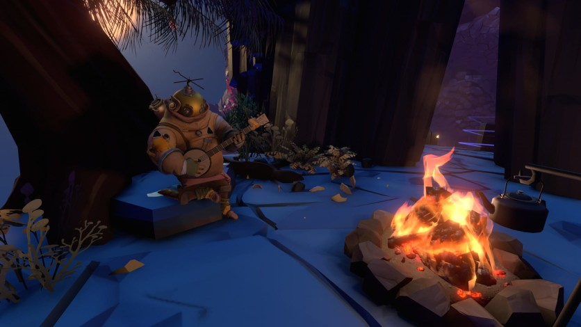
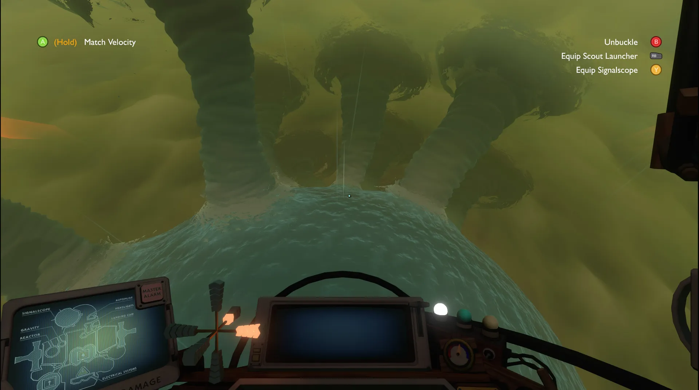
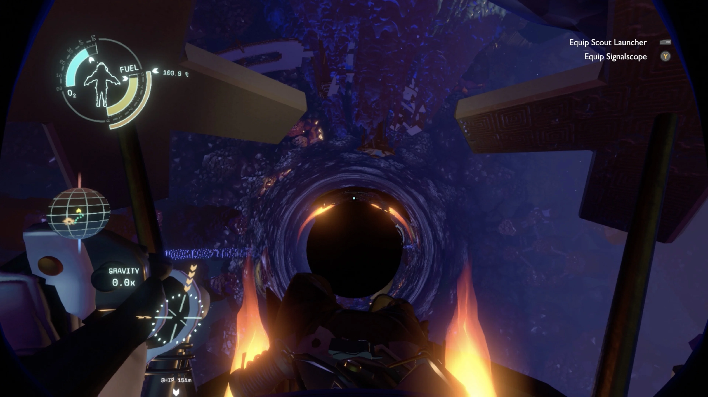
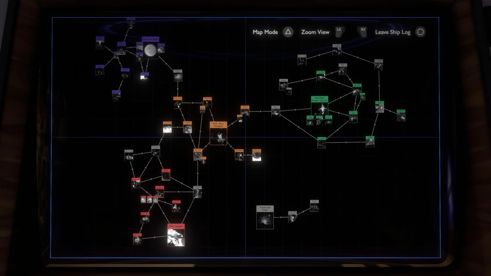

Introduction
Title description, Dec 7, 2024

Outer Wilds is a 2019 action-adventure game developed by Mobius Digital and published by Annapurna
Interactive. The game follows the player character as they explore a planetary system stuck in a
22-minute
time loop that resets after the sun goes supernova and destroys the system. Through repeated
attempts,
they
investigate the alien ruins of the Nomai to discover their history and the cause of the time loop.
The game began development in 2012 as director Alex Beachum's master's thesis. He was inspired to
create
a
game focused on exploration in which the player character was not the center of the game world.
Beachum
led
a small team in building the game, first as an independent project, then as a commercial game at
Mobius
after the project won the Excellence in Design and Seumas McNally Grand Prize awards at the 2015
Independent
Games Festival. Annapurna joined the project as the publisher in 2015 and funded its expansion
beyond a
student project.
Outer Wilds was released for Windows, Xbox One, and PlayStation 4 in 2019, for PlayStation 5 and Xbox
Series
X/S in 2022, and for Nintendo Switch in 2023. An expansion which explores further themes in a new
location
in the planetary system, Echoes of the Eye, was begun in 2019 and released for the same platforms in
2021.
Outer Wilds was positively received upon release, with most critics acclaiming its design and some
criticizing the uneven difficulty of gameplay and pursuing the game's mysteries. Echoes of the Eye
was
also
positively received, with some criticism for its introduction of horror elements. Outer Wilds was
featured
in several game of the year lists for 2019 as well as game of the decade lists, and won in multiple
categories at award shows, including the Best Game award at the 16th British Academy Games Awards.
Gameplay
Title description, Sep 2, 2024

Outer Wilds is an action-adventure video game set in a small planetary system in which the player
character,
an unnamed space explorer referred to as the Hatchling, explores and investigates its mysteries in a
self-directed manner. Whenever the Hatchling dies, the game resets to the beginning; this happens
regardless
after 22 minutes of gameplay due to the star going supernova. The player uses these repeated time
loops
to
discover the secrets of the Nomai, an alien species that has left ruins scattered throughout the
planetary
system, including why the star is exploding.[1] A downloadable content expansion, Echoes of the Eye,
adds
additional locations and mysteries to the game.[2]
The Hatchling moves around the game space by walking and jumping; if they are wearing their spacesuit
they
may also use its jetpack to propel themselves upwards.[3] The spacesuit has a limited supply of
fuel,
which
can be refilled at specific locations, and a limited supply of oxygen, which is refilled when the
Hatchling
is near trees.[4] If the Hatchling runs out of fuel, they can use oxygen as a propellant. Running
out of
oxygen, hitting an object or surface too hard, or being crushed will injure the Hatchling or damage
their
suit, killing them if too much injury is sustained.[5] While wearing the spacesuit, an interface
showing
the
remaining fuel and oxygen is shown. Damage to the Hatchling is shown by their suit icon turning red,
with no
explicit health amount given.[6] The Hatchling also has a signalscope, which can be used to scan for
the
source of audio transmissions.[7]
The Hatchling can also freely fly a small spacecraft throughout the planetary system. The spacecraft
and
the
celestial bodies of the system follow an exaggerated system of Newtonian physics, causing the
planets
and
other bodies to swiftly orbit the sun and exert their own variable gravity fields, and requiring the
player
to counteract their own momentum to slow down while flying.[1] Collisions can damage parts of the
spacecraft
and make them inoperable; too much damage can destroy it and kill the Hatchling, but can otherwise
be
repaired by exiting the spacecraft and interacting with the damaged component.[8] Both the
spacecraft
and
the spacesuit can launch a small probe to light up an area or take pictures.[9]
The player character can only carry a single object at a time. Nothing is brought back with the
Hatchling
when the time loop resets, with the exception of the data on the spacecraft's computer, which
displays
the information and mysteries that the player has found so far, organized either by location or in a
web
of connections.[10] Locations evolve throughout the duration of the time loop, such as parts of a
planet
collapsing or sand flowing from one area to another, making some areas only accessible from specific
points in the time loop.[11] Other people throughout the planetary system can be communicated with
in
text-based dialogue trees, while Nomai writing, found in their ruins and presented as a branching
tree
of messages, can be read with a translator tool.[4][9]
Setting
Title description, Sep 2, 2024

Outer Wilds is set in a planetary system consisting of a star orbited by a number of celestial
bodies:
the
Hourglass Twins, a pair of planets orbiting each other with sand flowing from one to the other;
Timber
Hearth, a forested Earth-like planet that is the homeworld of the four-eyed Hearthian species; the
Attlerock, a small rocky moon orbiting Timber Hearth; Brittle Hollow, a hollow planet that is
collapsing
into a black hole at its center and is orbited by Hollow's Lantern, a volcanic moon; Giant's Deep, a
cloud-covered water planet containing several floating islands; and Dark Bramble, a shattered planet
largely
composed of a space-warping vine plant, inhabited by giant aggressive anglerfish. Each planet has a
distinct
visual identity, such as Timber Hearth resembling a campsite in the woods with browns and greens,
while
Giant's Deep has blue-green rocky beaches. Each planet has a distinct auditory identity as well,
with a
member of the Outer Wilds space exploration program playing the same song on a unique instrument,
which
can
be listened to from anywhere in the solar system with the signalscope.[12] Additionally, there is
the
Quantum Moon, which moves to orbit different planets when not observed; the Interloper, an icy
comet;
and
space stations orbiting the sun and Giant's Deep left by the Nomai, a race that went extinct in the
planetary system long before the game begins. Hearthians are a four-eyed species that resemble
aquatic
animals with legs, while the Nomai are a three-eyed, fur-covered, antlered species that wear robes
and
large
masks.[12]
Story
Title description, Sep 2, 2024

The player takes the role of an unnamed Hearthian space explorer, referred to as the Hatchling by
other
Hearthians, preparing for their first space flight as part of Outer Wilds Ventures. They are to be
the
first to explore with a device that can translate written Nomai text; prior to departure, a Nomai
statue
in a museum turns towards them. The player discovers that whenever the Hatchling dies, a vision of a
Nomai mask appears, and they are sent back in time to the start of a game in a time loop.
Additionally,
the loop resets after 22 minutes regardless, as the sun abruptly goes supernova, destroying the
system.
The player, through repeated timeloops, explores the planetary system and the ruins that the Nomai
left
behind. They discover from their writings that the Nomai were a nomadic species that explored the
universe in large independent vessels; one vessel discovered a signal older than the universe
emanating
from something orbiting the Hearthian star. Upon warping to the system, the vessel became embedded
in
Dark Bramble, with some of the Nomai surviving in escape pods. No longer able to detect the signal,
the
Nomai built a civilization throughout the system while trying to find the source, dubbed the "Eye of
the
Universe". They eventually discover that, with enough power, they can send objects or information
backwards in time using a linked pair of black and white holes. This inspires them to build a probe
cannon in orbit around Giant's Deep to fire the probe in a random direction to locate the Eye, and a
station in orbit around the star that would artificially induce a supernova, generating enough power
to
send the probe's data back in time 22 minutes. Together, this would allow the probe to be fired in
as
many times and directions as necessary to find the Eye, at which point the Nomai would shut down the
star station, ending the time loop. The star station did not work, however, and before an alternate
power source could be found, the Interloper entered the system. Upon reaching the star and melting,
a
powerful wave of "ghost matter" spread throughout the system, killing all of the Nomai instantly.
A long time later, after the animals of Timber Hearth evolved into the Hearthians, the sun goes
supernova as part of the natural end of the universe, triggering the time loop repeatedly until the
probe cannon finds the Eye at the beginning of the game and through the statue inducts the Hatchling
into the loop. Armed with this knowledge, the player is able to replace the power source of the
derelict
Nomai vessel and input the coordinates of the Eye. Upon entering the Eye, the player encounters
echoes
of the other members of Outer Wilds and, optionally, a Nomai if they had met on the Quantum Moon,
and as
the universe ends the Eye creates a new universe in a Big Bang. The ending shows a similar planetary
system with new life forms 14.3 billion years after its creation, with influences of the Hearthians
and
Nomai.